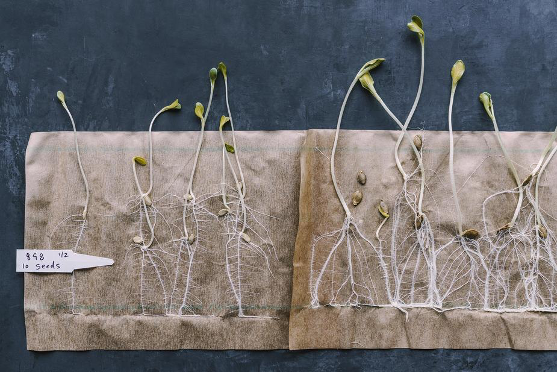

THE BEST INGREDIENTS START BEFORE THEY’RE GROWN.
Every variety in our catalog has been tested (and tasted) in the field and kitchen, improving the recipe long before an ingredient reaches the plate.
MORE ABOUT OUR SEEDSTHE BEST INGREDIENTS START BEFORE THEY’RE GROWN.
Every variety in our catalog has been tested (and tasted) in the field and kitchen, improving the recipe long before an ingredient reaches the plate.
MORE ABOUT OUR SEEDS